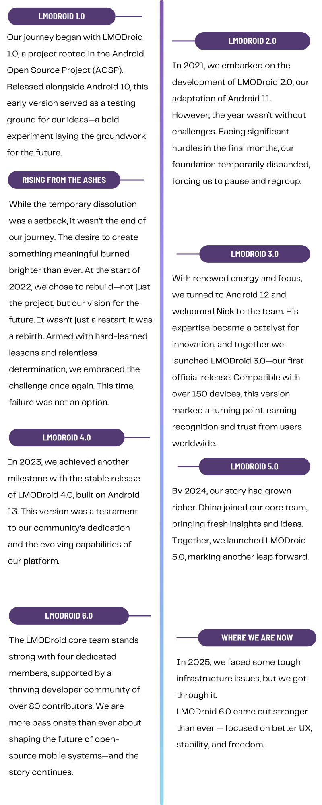
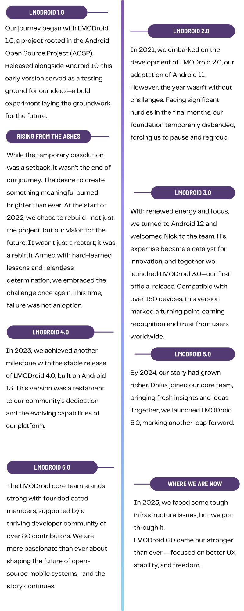

At LibreMobileOS, our robust infrastructure is the backbone of our development process, ensuring efficiency, collaboration, and reliability at every step.
- Gerrit for Code Review:
We rely on Gerrit as our code review platform to maintain high-quality standards. This powerful tool fosters collaboration among contributors, enabling seamless feedback, tracking, and improvement of code before it becomes part of the project.
- Git for Code Management:
Our codebase is securely stored and version-controlled using Git. This ensures that every contribution is meticulously tracked, making it easy to collaborate across a global developer community while maintaining a clear history of changes.
- Jenkins as Our Build Server:
Jenkins powers our continuous integration and delivery pipelines. It automates the build and testing processes, allowing us to deliver stable and reliable software efficiently. From compiling code to deploying new versions, Jenkins ensures a smooth and consistent workflow.
LibreMobileOS isn’t just about building software—it’s about building a movement for a more open, equitable, and innovative digital future. Together, we’re shaping the next generation of mobile freedom.
 (1).svg) LibreMobileOS
LibreMobileOS
 
